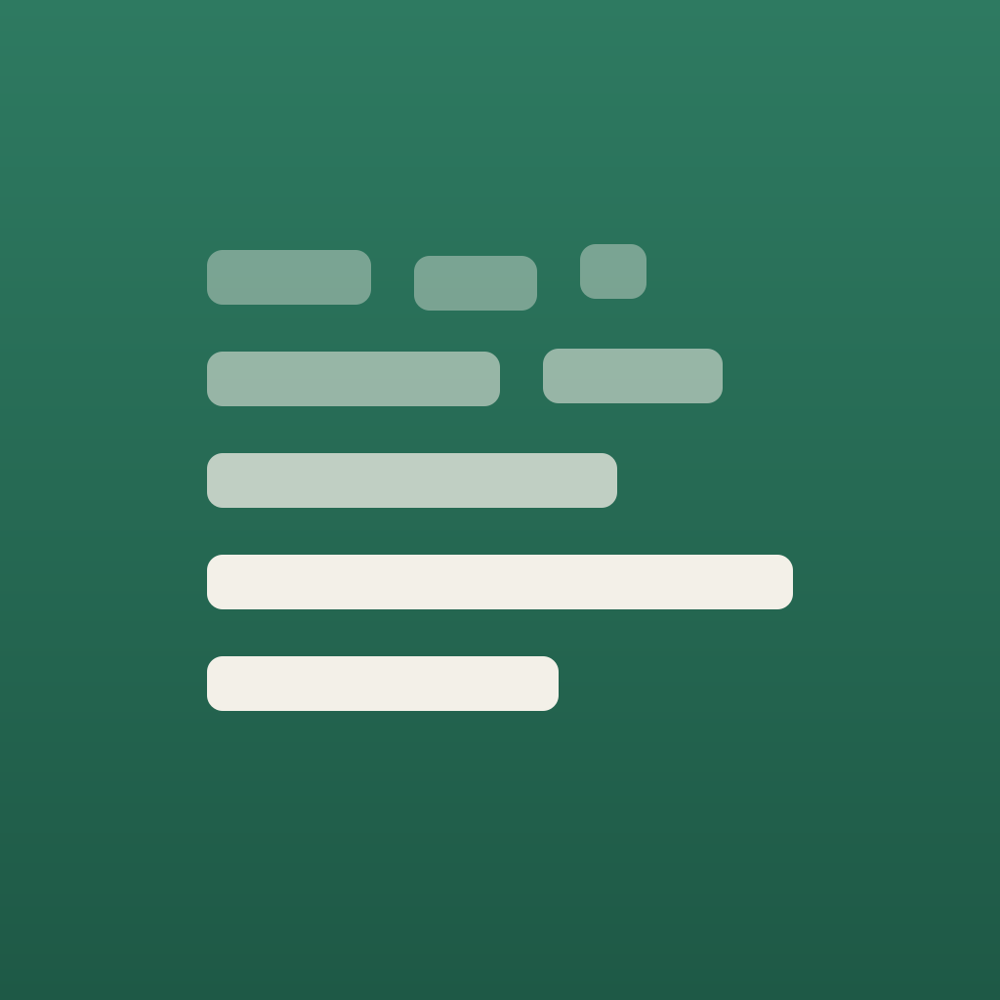
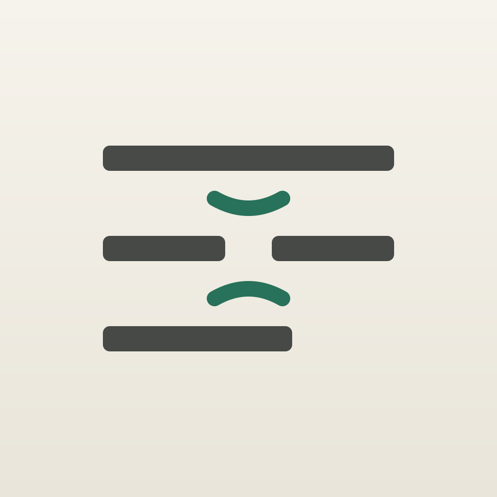

Лист для выбора: те же файлы, что уйдут в сборку, показаны в реальных размерах. Плита нарисована квадратной — скругление и свет macOS накладывает сама.
Разорванные строки сверху оседают в целые снизу. Глиф строки меню — та же мысль в двух полосах.

Типографский знак «закрыть пробел»: две встречные дуги стягивают место, откуда убран текст.

Тёмная строка меню показана инверсией: система сама красит template image под фон.
Файлы *.svg — источник, *.png рядом — запасные растры.